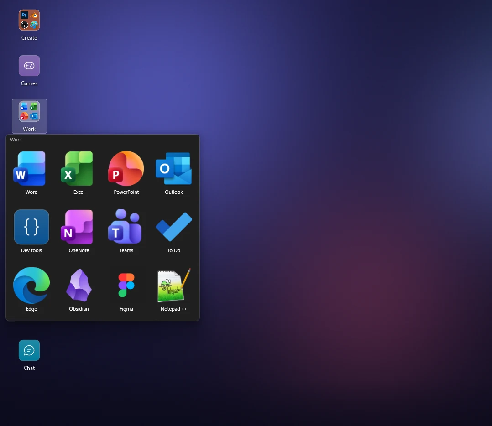
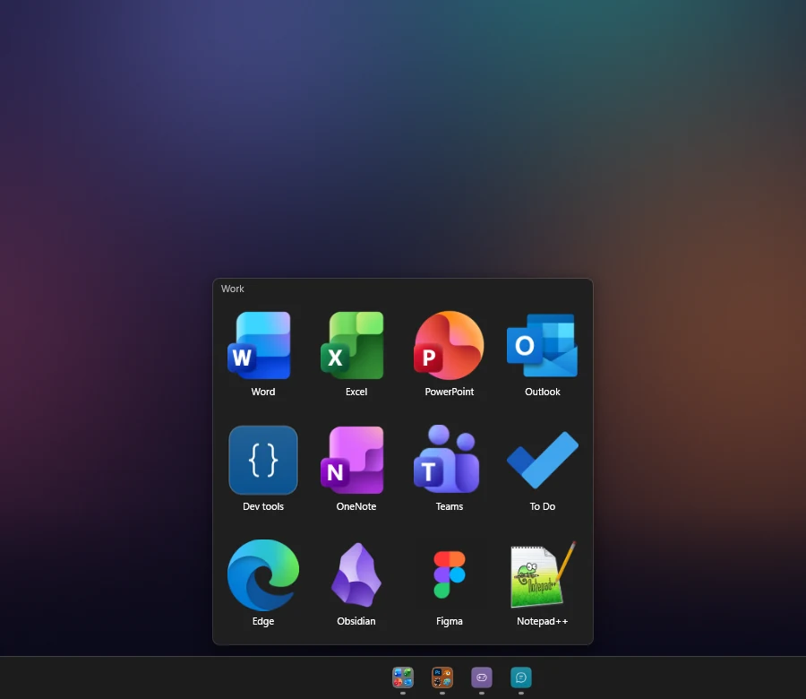
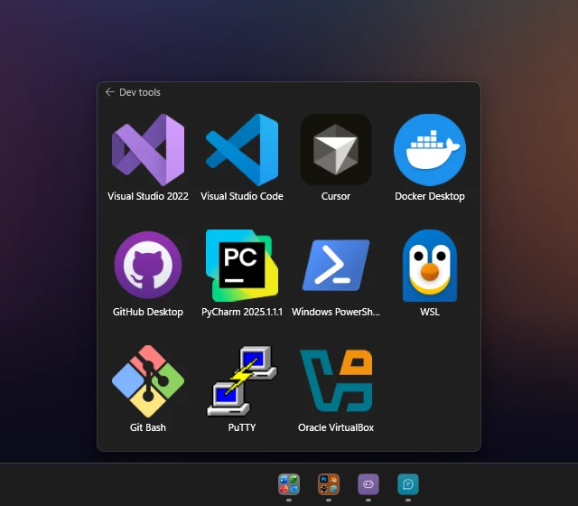
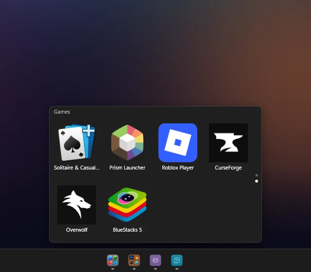
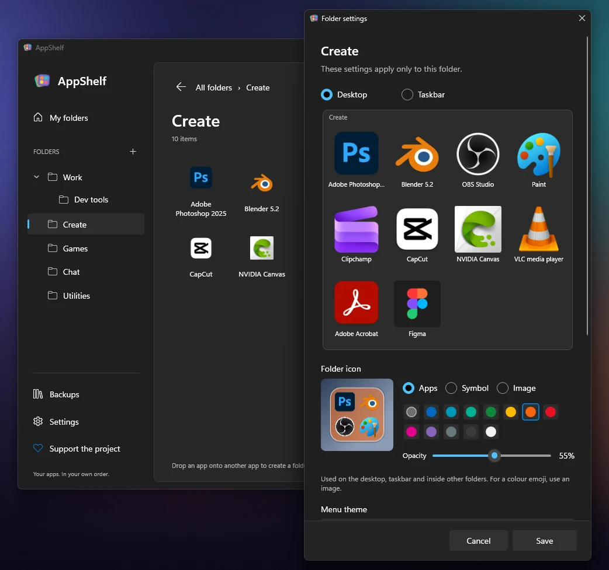
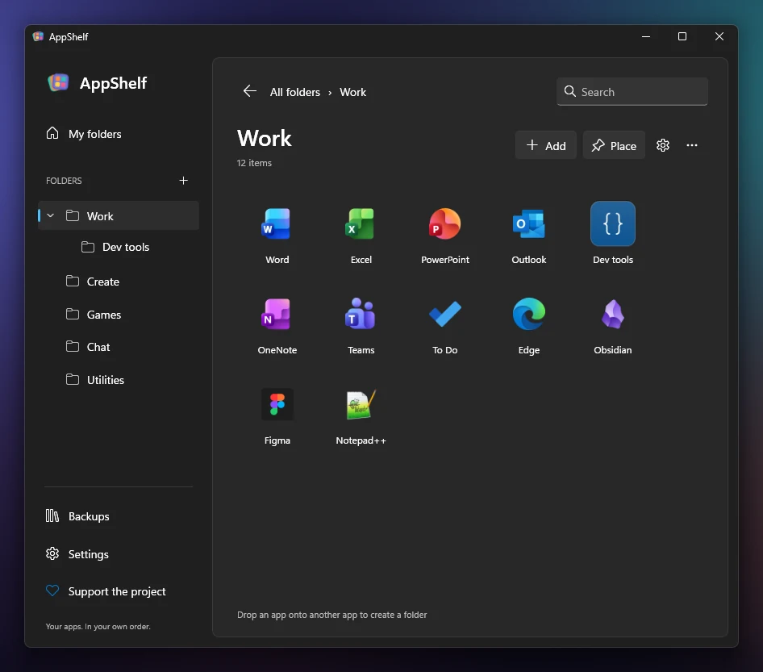

Your apps, neatly in folders
Put folders of apps on the desktop. One click opens the menu, another starts the app.

 AppShelf
AppShelf
AppShelf puts your apps into folders that open from the taskbar or the desktop. The menu stays small: a title, your app icons and the folders inside it.
Windows 11 x64 · English and Russian · Open source under the MIT License
Everything else lives in the editor, a clean Windows 11 window where you build your folders.
Put folders of apps on the desktop. One click opens the menu, another starts the app.

Each folder gets its own button next to your other apps, with a preview of what is inside and quick-launch buttons.

Keep tools grouped. The folder’s title takes you back, and so do Backspace and Alt+Left.

Choose rows and columns. When a folder holds more, turn its pages with the mouse wheel, Page Up and Page Down, or the dots, like in Start.

Previews of its apps, a symbol or your own picture, on a plate of any color and opacity. Light or dark menus, and icons from 50 to 200 percent, separately for the desktop and the taskbar.

Drag apps in, sort them and nest folders in an editor that looks like part of Windows 11.

Taskbar buttons and one-click desktop folders work while AppShelf runs. Starting with Windows is one switch in Settings.
These are AppShelf’s own buttons, not Explorer pins. The Start menu stays as it is.
AppShelf keeps copies of the shortcuts you add, so tidying the desktop does not break folders, and it finds apps that moved after an update.
No accounts, analytics or ads. Everything is kept on your PC.
Privacy policyLet Claude or another MCP client sort your apps into folders, and undo any change. There is no chatbot inside AppShelf.
MCP setupAppShelf tells you when a new version is out. The Microsoft Store version updates through the Store.
Requires Windows 11 x64.